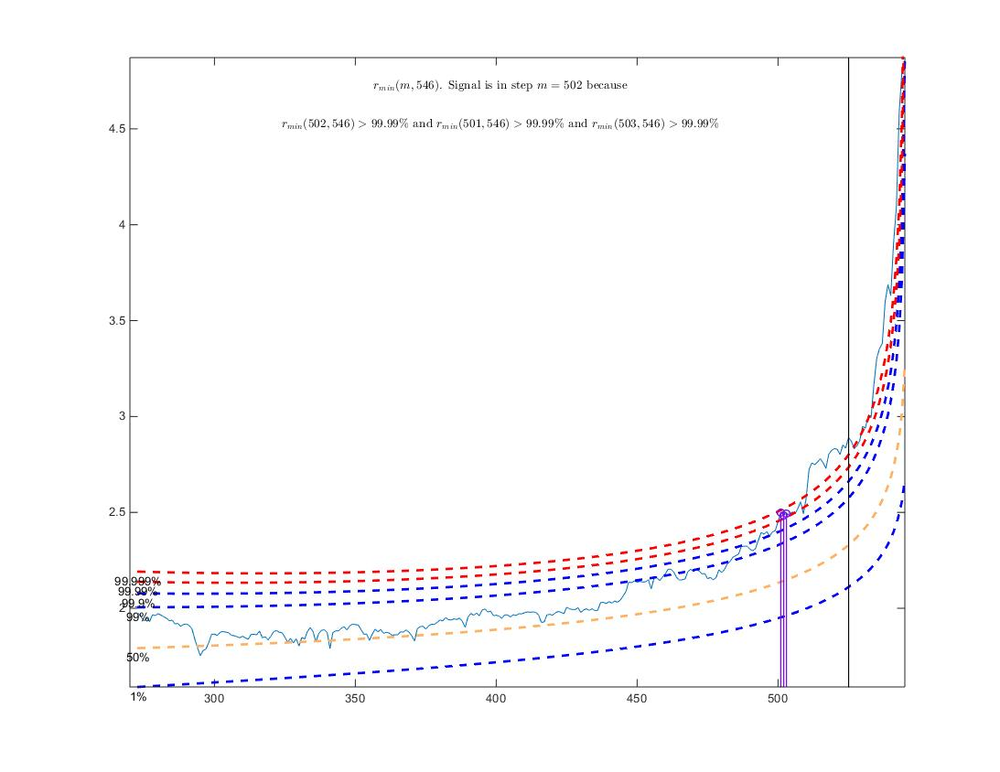
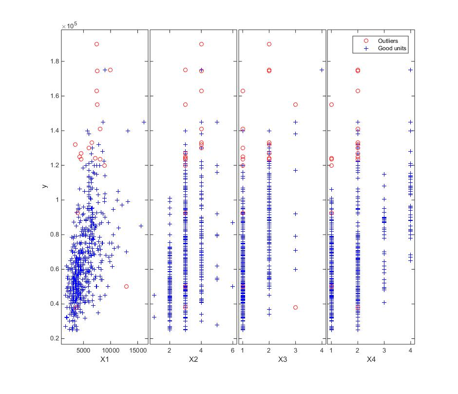
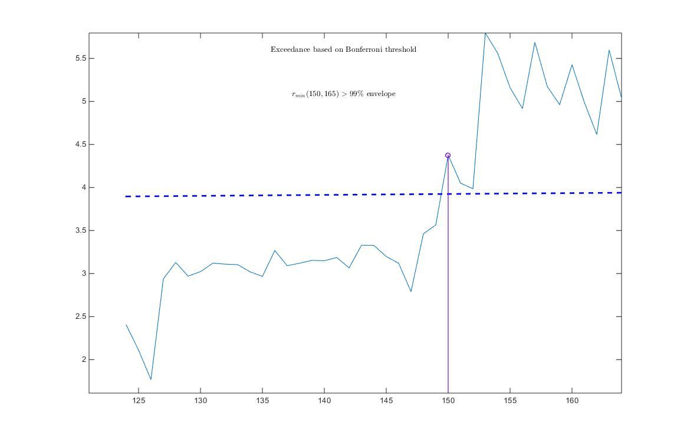
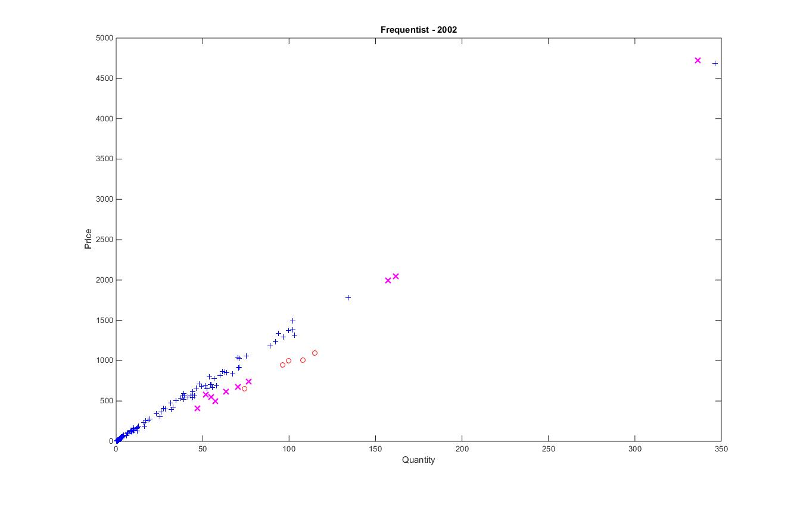
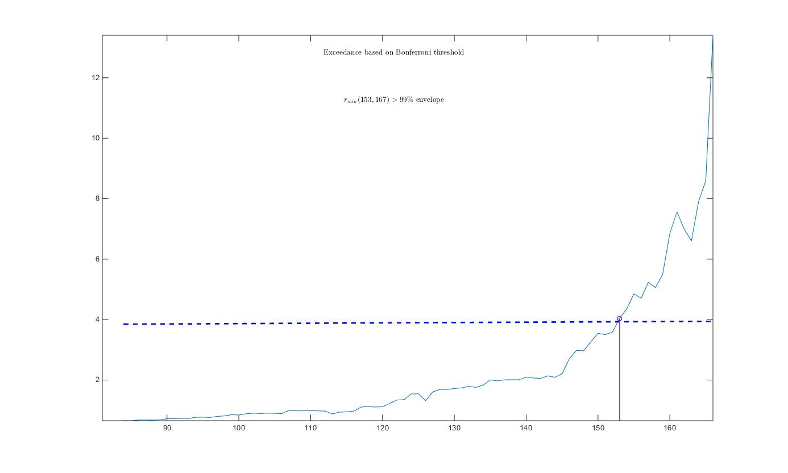
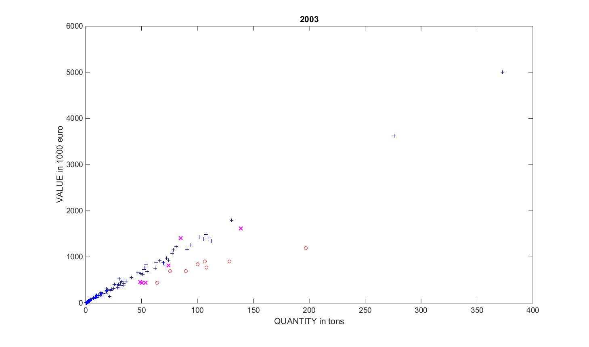
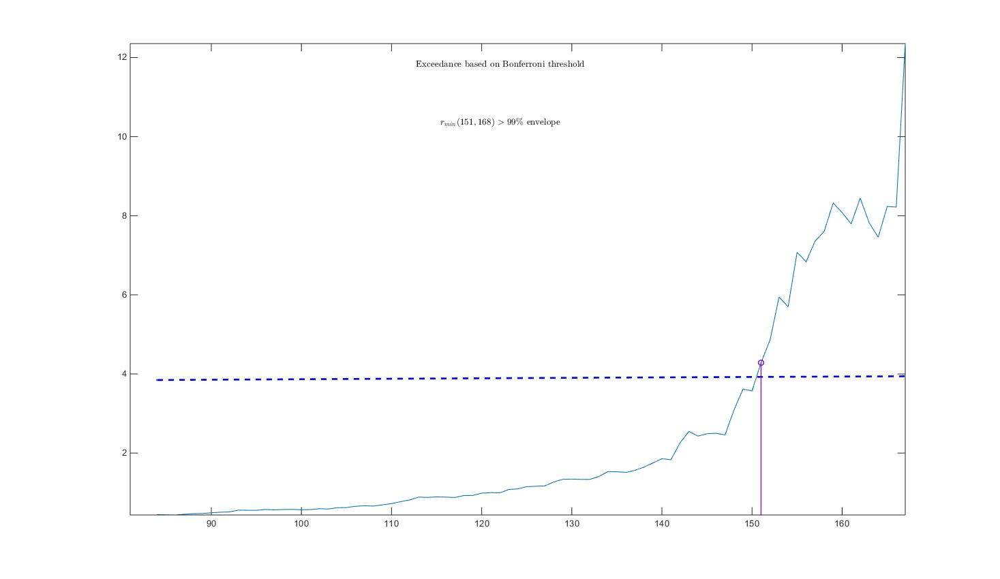
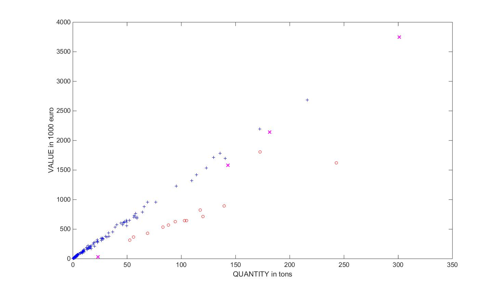
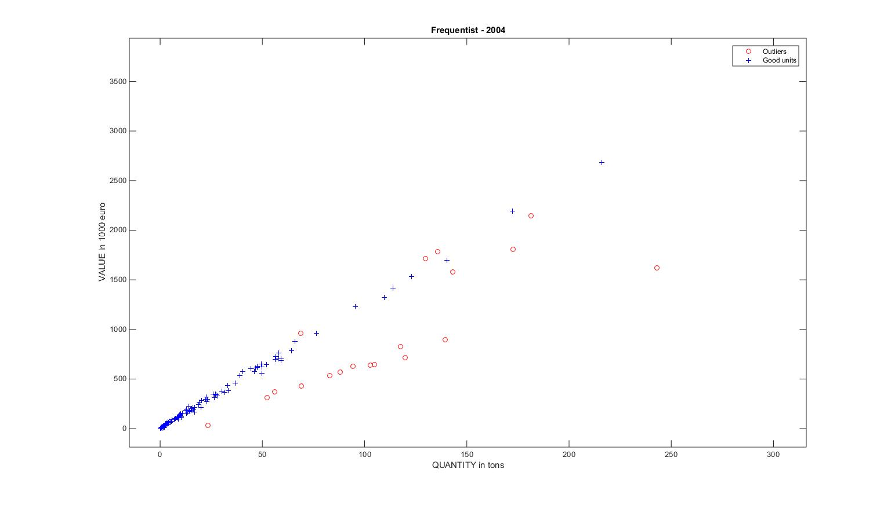
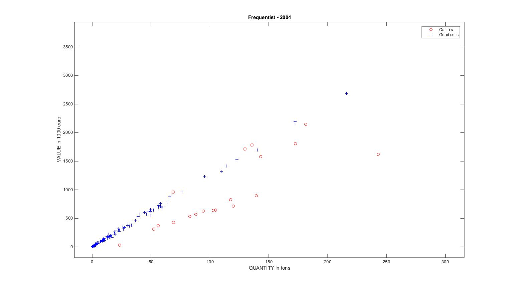

| Flexible Statistics Data Analysis Toolbox™ |
|
Automatic outlier detection procedure in Bayesian linear regression
[out]
= FSRB(y, X)
[out] = FSRB(y, X, param1,
val1, param2,
val2,...)
[out] = FSRB(y, X)
performs the automatic outlier detection procedure in Bayesian linear regression.
| Parameter | Value |
|---|---|
| 'y' | A vector with n elements that contains the response variables. Missing values (NaN's) and infinite values (Inf's) are allowed, since observations (rows) with missing or infinite values will automatically beexcluded from the computations. |
| 'X' | Data matrix of explanatory variables (also called 'regressors') of dimension (n x p-1). Rows of X represent observations, and columns represent variables. Missing values (NaN's) and infinite values (Inf's) are allowed, since observations (rows) with missing or infinite values will automatically be excluded from the computations. |
| PRIOR INFORMATION: β is assumed to have a normal distribution with mean β and (conditional on τ) covariance (1/τ0) (X0'X0)-1 β~N(β0, (1/τ0) (X0'X0)-1) The prior distribution of τ0 is a γ distribution with parameters a and b, that is p(τ0) ∝ τa0-1 Exp(-b0, τ) and E(τ0)= a0/b0 |
Remark: The user should only give the input arguments that have to change their default value. The name of the input arguments needs to be followed by their value. The order of the input arguments is of no importance. Missing values (NaN's) and infinite values (Inf's) are allowed, since observations (rows) with missing or infinite values will automatically be excluded from the computations. y can be both a row of column vector.
[out]=FSRB(y, X) returns the following information
Note FSRB automatically includes a constant term in all models. Do not enter a column of 1s directly into X. |
[out] = FSRB(y,X,param1,val1,param2,val2,...) specifies one or more of the name/value pairs described in the following table.
| Parameter | Value |
|---|---|
| 'intercept' |
If 1, a model with constant term will be fitted (default) else no constant term will be included. |
| 'bayes' | a structure which specifies prior information Strucure bayes contains the following fields beta0: p-times-1 vector containing prior mean of β R p-x-p positive definite matrix which can be interepreted as X0'X0 where X0 is a n0 x p matrix coming from previous experiments (assuming that the intercept is included in the model) The prior distribution of τ0 is a γ distribution with parameters a and b, that is p(τ0) ∝ τa0-1 Exp(-b0, τ) and E(τ0)= a0/b0 tau0: scalar. Prior estimate of τ=1/ σ2 =a0/b0 n0 : scalar. Sometimes it helps to think of the prior information as coming from n0 previous experiments. Therefore we assume that matrix X0 (which defines R), was made up of n0 observations. |
|
REMARK: if structure bayes is not supplied the default values
which are used are: beta0=zeros(p,1)vector of zeros R =eye(p)Identity matrix tau0=1/1e+6; Very large value for the prior variance, that is a very small value for τ0 n0=1; just one prior observation |
|
| 'plots' | Scalar. If plots=1 (default) the plot of minimum deletion residual with envelopes based on n observations and the scatterplot matrix with the outliers highlighted is produced. If plots=2 the user can also monitor the intermediate plots based on envelope superimposition, else no plot is produced. |
| 'init' |
scalar, which specifies the point where to initialize the search and start monitoring required diagnostics. Notice that if bsb is supplied init>=length(bsb). if init is not specified it will be set equal to p+1, if the sample size is smaller than 40; min(3*p+1,floor(0.5*(n+p+1))), otherwise. |
| 'nocheck' |
Scalar. If nocheck is equal to 1 no check is performed on matrix y and matrix X. Notice that y and X are left unchanged. In other words the additional column of ones for the intercept is not added. As default nocheck=0. |
| 'bivarfit' |
This option adds one or more least square lines, based on SIMPLE REGRESSION of y on Xi, to the plots of y|Xi. bivarfit = '' is the default: no line is fitted. bivarfit = '1' fits a single ols line to all points of each bivariate plot in the scatter matrix y|X. bivarfit = '2' fits two ols lines: one to all points and another to the group of the genuine observations. The group of the potential outliers is not fitted. bivarfit = '0' fits one ols line to each group. This is useful for the purpose of fitting mixtures of regression lines. bivarfit = 'i1' or 'i2' or 'i3' etc. fits an ols line to a specific group, the one with index 'i' equal to 1, 2, 3 etc. Again, useful in case of mixtures. |
| 'multivarfit' |
This option adds one or more least square lines, based on
MULTIVARIATE REGRESSION of y on X, to the plots of y|Xi. multivarfit = '' is the default: no line is fitted. multivarfit = '1' fits a single ols line to all points of each bivariate plot in the scatter matrix y|X. The line added to the scatter plot y|Xi is avconst + CiXi, where Ci is the coefficient of Xi in the multivariate regression and avconst is the effect of all the other explanatory variables different from Xi evaluated at their centroid (that is ȳ'C)) multivarfit = '2' equal to multivarfit ='1' but this time we also add the line based on the group of unselected observations (i.e. the normal units). |
| 'labeladd' |
If this option is '1', we label the outliers with the
unit row index in matrices X and y. The default value is labeladd='', i.e. no label is added. |
| 'nameX' | cell array of strings of length p containing the labels of the variables of the regression dataset. If it is empty (default) the sequence X1, ..., Xp will be created automatically |
| 'namey' | character containing the label of the response. |
| 'ylim' | vector with two elements controlling minimum and maximum on the y axis. Default value is '' (automatic scale) |
| 'xlim' | vector with two elements controlling minimum and maximum on the x axis. Default value is '' (automatic scale) |
| 'bonflev' |
option to be used if the distribution of the data is
strongly non normal and, thus, the general signal
detection rule based on consecutive exceedances cannot be
used. In this case bonflev can be: - a scalar smaller than 1 which specifies the confidence level for a signal and a stopping rule based on the comparison of the minimum MD with a Bonferroni bound. For example if bonflev=0.99 the procedure stops when the trajectory exceeds for the first time the 99% bonferroni bound. - a scalar value greater than 1. In this case the procedure stops when the residual trajectory exceeds for the first time this value. Default value is '', which means to rely on general rules based on consecutive exceedances. |
| 'msg' |
scalar which controls whether to display or not messages
on the screen. If msg=1 (default) messages are displayed on the screen about step in which signal took place and .... else no message is displayed on the screen. |
References:
Chaloner and Brant (1988). A Bayesian Approach to Outlier Detection and
Residual Analysis, Biometrika, Vol 75 pp. 651-659.
Riani M., Corbellini A., Atkinson A.C. (2015), Very Robust Bayesian
Regression for Fraud Detection, submitted
Atkinson A.C., Corbellini A., Riani M., (2015) Robust Bayesian
Regression, submitted.
Copyright 2008-2014.
Written by FSDA team
% Example of Houses Price
% load dataset
load hprice.txt;
% setup parameters
n=size(hprice,1);
y=hprice(:,1);
X=hprice(:,2:5);
n0=5;
% set \beta components
beta0=0*ones(5,1);
beta0(2,1)=10;
beta0(3,1)=5000;
beta0(4,1)=10000;
beta0(5,1)=10000;
% \tau
s02=1/4.0e-8;
tau0=1/s02;
% R prior settings
R=2.4*eye(5);
R(2,2)=6e-7;
R(3,3)=.15;
R(4,4)=.6;
R(5,5)=.6;
R=inv(R);
% define a Bayes structure with previous data
bayes=struct;
bayes.R=R;
bayes.n0=n0;
bayes.beta0=beta0;
bayes.tau0=tau0;
intercept=1;
% function call
outBA=FSRB(y,X,'bayes',bayes,'msg',0,'plots',1,'init',round(n/2),'intercept', intercept)


In this second example we compare the frequentist forward search along with plot of the bonferronized Minimum Deletion Residual threshold, with the equivalent Bayesian forward search, with an empirical prior information of both years t-1 and t-2.
close all
% nsamp = number of subsamples to use in the frequentist analysis of first
% year, in order to find initial subset using LMS
nsamp=3000;
% threshold to be used to increase susbet of good units
threshold=300;
bonflev=0.99; % Bonferroni confidence level to be used for first year
bonflevB=0.99; % Bonferroni confidence level to be used for subsequent years
% Load 2002 Fishery dataset
Fishery2002=load('Fishery2002.txt');
y02=Fishery2002(:,3);
X02=Fishery2002(:,2);
n02=length(y02);
seq02=1:n02;
% frequentist Forward Search, 1st year
[out02]=FSR(y02,X02,'nsamp',nsamp,'plots',1,'msg',0,'init',round(n02*3/4),'bonflev',bonflev);
% In what follows
% g stands for good units
% i stand for intermediate units (i.e. units whose raw residual is smaller
% than threshold)
% o stands for outliers
% gi stands for good +intermediate units
% u02g = good units
% n02g = number of good units
u02g=setdiff(seq02,out02.ListOut);
n02g=length(u02g);
X02g=[ones(length(u02g),1) X02(u02g,:)];
y02g=y02(u02g);
% b02g = regression coefficients just using g units
b02g=X02g\y02g;
% res02 = squared raw residuals for all units using b02g
res02=(y02-[ones(length(X02),1) X02]*b02g).^2;
res02o=res02(out02.ListOut);
% sel= boolean vector which is true for the intermediate units
% (units whose squared residual is below the threshold)
sel=res02o < threshold^2;
% u02i = vector containing intermediate units (that is outliers whose
% residual is smaller than threshold)
u02i=out02.ListOut(sel);
% u02o = vector containing outliers whose residual is out of the threshold
u02o=out02.ListOut(~sel);
% u02gi = g + i units
if ~isempty(u02i)
u02gi=[u02g u02i];
else
u02gi=u02g;
end
% n02gi = number of good + intermediate units
n02gi=length(u02gi);
% plotting section
hold('off')
% good units, plotted as (+)
plot(X02(u02g)',y02(u02g)','Marker','+','LineStyle','none','Color','b')
hold('on')
% intermediate units plotted as (X)
plot(X02(u02i)',y02(u02i)','Marker','X','MarkerSize',9,'LineWidth',2,'LineStyle','none','Color','m')
% outliers, plotted as (O)
plot(X02(u02o)',y02(u02o)','Marker','o','LineStyle','none','Color','r')
xlabel('Quantity');
ylabel('Price');
title('Frequentist - 2002');
% S202gi = estimated of sigma^2 using g+i units
S202gi=sum(res02(u02gi))/(n02gi-2);
% X02gi = X matrix referred to good + intermediate units
X02gi=[ones(n02gi,1) X02(u02gi,:)];
% y02gi = y vector referred to good + intermediate units
y02gi=y02(u02gi);
% bayes = structure which contains prior information to be used in year
% 2003
bayes=struct;
bayes.beta0=b02g; % beta prior is beta based on g units
tau0=1/S202gi; % tau0 is based on g + i units
bayes.tau0=tau0;
R=X02g'*X02g; % R is based on g units
bayes.n0=n02gi; % n0 is based on g + i units
bayes.R=R;
%% 2003
% Load 2003 Fishery dataset
Fishery2003=load('Fishery2003.txt');
y03=Fishery2003(:,3);
X03=Fishery2003(:,2);
n03=length(y03);
seq03=1:n03;
% Bayesian Forward Search, 2nd year
out03=FSRB(y03,X03,'bayes',bayes,'msg',0,'plots',1,'init',round(n03/2),'bonflev',bonflevB);
u03g=setdiff(seq03,out03.ListOut);
n03g=length(u03g);
% compute beta coefficient for year 2003 just using good units
X03g=[ones(n03g,1) X03(u03g,:)];
y03g=y03(u03g);
b03g=X03g\y03g;
res03=(y03-[ones(length(X03),1) X03]*b03g).^2;
res03o=res03(out03.ListOut);
sel=res03o






 

See Also
fsraddt.html
fsrbeda.html